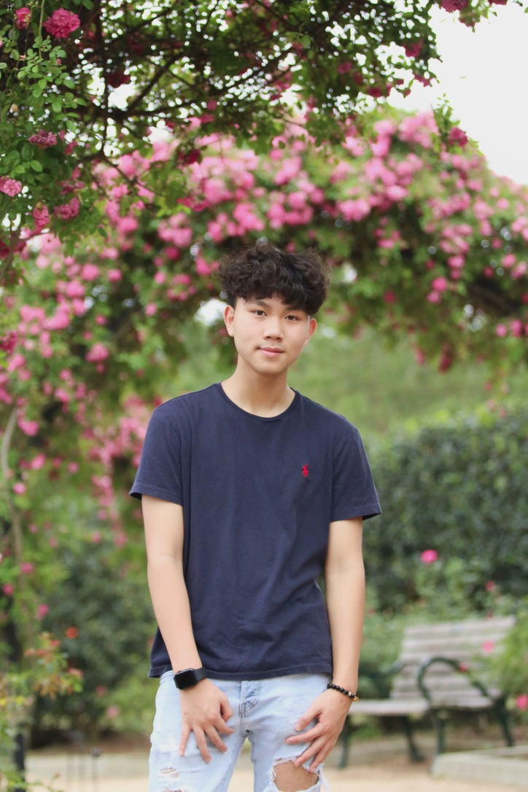

Meet the Owner!
Tommy Cao
Tommy Cao is the proud owner of People United Cafe. With over 10 years of experience in the food industry, Tommy's passion for delicious food and exceptional service led him to establish this beloved cafeteria.
Under Tommy's leadership, People United Cafe has become a go-to spot for students, faculty, and locals alike. Tommy believes in using fresh, locally-sourced ingredients to create mouthwatering dishes that leave customers coming back for more.
When he's not busy managing the cafeteria, Tommy enjoys experimenting with new recipes in his home kitchen and exploring local farmers' markets for inspiration.